Introduction - ELECTRICAL CIRCUIT FOR INSTRUMENTS/INDICATORS
- Path
- Descriptions > 55 ELECTRICAL EQUIPMENT > 5505 ELECTRICAL CIRCUIT FOR INSTRUMENTS/INDICATORS > Introduction - ELECTRICAL CIRCUIT FOR INSTRUMENTS/INDICATORS
- Kind
- system description
- Applies to
- all engines; all production periods
- Interactive page
- https://sloeber94.github.io/elrnDB-a156/en/#/3239226
Applies to: all engines; all production periods
The electrical system has been designed with the safety of the vehicle uppermost, to prevent the risk of fire and the other consequences of electrical malfunctions and to reduce defective connections thanks to the adoption of the latest generation connectors.
The main solutions adopted are:
- Supplies protected by maxi fuses to interrupt the electrical system, in the case of a short circuit, just downstream of the battery.
- The only cables without maxi fuses (starter motor and alternator) are shielded and positioned in a safe place;
- The layout of the entire system is designed to optimize the risk of damage in the case of a failure or accident.
- There are special cables in the engine compartment which are resistant to high temperatures and also protected with sheaths or pipes.
- The connections are fitted with anti-slip devices on the terminals (secondary lock).
JUNCTION UNIT
This is located on the left side of the facia and is protected by a removable flap.
Front view
Refer to the illustration
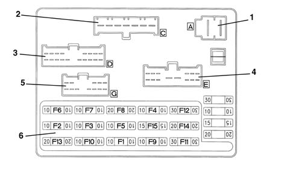
1, connector A (front wiring) 2, connector C (front wiring) 3, connector D (front wiring) 4, connector E (rear wiring) 5, connector G (rear wiring) 6, Fuses
Rear view
Refer to the illustration
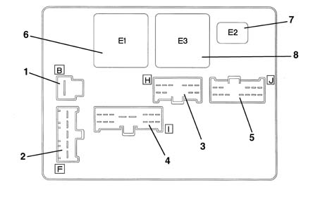
1, connector B (dashboard wiring) 2, connector F (dashboard wiring) 3, connector H (dashboard wiring) 4, connector I (dashboard wiring) 5, connector J (dashboard wiring) 6, relay E1 (loads excluded on starting) 7, relay E2 (horns) 8, relay E3 (heated rear window)
Fuses
The fuses are located on the front of the junction unit and are arranged as shown in the figure.
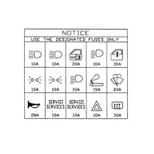
The circuits protected by the individual fuses are as follows:
Fuse, protected circuit
F1 stop lights control integrated services control unit remote control receiver; alarm; ABS; reversing lights; sun visor light; radio; cellular 'phone; telepass
F2 side lights, no. plate light; stop and rear fog light - left side
F3 side lights, no. plate light; stop and rear fog light - right side
F4 right dipped beam headlamp; right headlamp adjuster
F5 left dipped beam headlamp; left headlamp adjuster; headlamp adjuster and rear fog lamp enablement
F6 right main beam headlamp
F7 left main beam headlamp; main beam warning light
F8 central door locking; boot light; timer-controlled courtesy lights; subwoofer
F9 direction indicators / hazard lights
F10 instruments; interior illumination; clock; car radio; trip recorder reset; alarm; remote control receiver; air conditioner; cellular telephone
F11 rear window and rearview mirror demister;
F12 front electric windows
F13 horns
F14 windscreen wash/wipe; headlamp washer.
F15 cigarette lighter; air conditioning compressor
Numerous shunt fuses are located beneath the facia immediately above the junction unit (some of these fuses form part of the front wiring, some form part of the facia wiring).
Applies to: all engines; production: fino a 03/98, da 04/98 a 02/99, da 02/00 a 01/01
The fuses are located on a special mount but their reciprocal position is not always the same, particularly on the different versions.
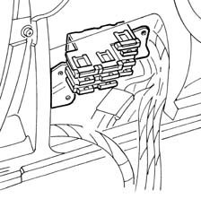
Applies to: all engines; production: da 03/99 a 01/00, da 02/01 a 02/02, da 03/02 a 09/03, da 10/03
The fuses are grouped in two special multiple connectors, one for the front wiring, the other for the facia wiring. The positions are pre-established and locations are as shown in the figure:
Applies to: engines: 1.6 TS , 1.8 TS; all production periods; only with equipment: Smart gearbox
A. front wiring
F1, Fog lamp fuse
F2, Injection services supply fuse
F3, Injection control unit supply fuse
F4, Ignition-operated services supply fuse (15/54)
F5, Injection memory and CODE fuse
F6, ABS fuse
Applies to: engines: 2.5 V6; all production periods; only with equipment: Q-System
F1, Fog lamp fuse
F2, Automatic transmission supply fuse
F3, Injection service supply fuse
F4, Ignition-operated services supply fuse (15/54)
F5, Injection memory and CODE fuse
F6, ABS fuse
Applies to: engines: 1.9 JTD 8v , 2.4 JTD 10v; all production periods
F1, Fog lamp fuse
F2, Diesel preheating supply fuse
F3, Injection control unit supply fuse
F4, Ignition-operated services supply fuse (15/54)
F5, Injection memory and CODE fuse
F6, ABS fuse
B. facia wiring
F1, Sun-roof fuse
F2, Rear window fuse
F3, Rear window fuse
F4, Ignition-operated lighting fuse (INT)
F5, Air bag fuse
F6, Ignition-operated supply fuse (INT/A)
Applies to: all engines; all production periods; only with equipment: Euro 3
C. facia wiring
F4, Rear power socket fuse (SW only)
F5, Fuse for heated seats, seat squab adjustment (electric)
F6, Boot release fuse
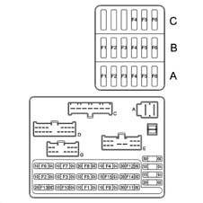
Applies to: all engines; production: fino a 03/98, da 04/98 a 02/99, da 02/00 a 01/01
Maxifuse box
The main supply lines are protected by maxifuses, contained in two fuse boxes located near the battery and supplied directly from the latter.
The two MAXIFUSE boxes contain fuses named according to the circuits protected, located as illustrated in the diagram:
- EFI: supply for fuses and relays for engine management
- IGN: ignition switch supply;
- J/B1 : supply for services through the junction unit fuses
- J/B2: supply for services through the junction unit fuses
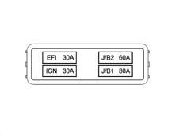
- ABS: ABS supply;
- VENT: engine cooling fans supply;
- VENT: engine cooling fans supply;
- A/C: air conditioning system supply.
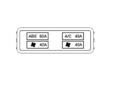
Applies to: engines: 1.9 JTD 8v , 2.4 JTD 10v; production: fino a 03/98, da 04/98 a 02/99, da 02/00 a 01/01
Two shunt fuses located next to the two boxes are used to supply the glow plugs and diesel and the additional heater.
Applies to: all engines; production: da 03/99 a 01/00, da 02/01 a 02/02, da 03/02 a 09/03, da 10/03
Link battery
The main supply lines are protected by maxifuses, grouped together in a box directly on the positive battery terminal and connected directly to it.
The fuse box contains up to eight maxifuses, named according to the circuits protected, located as illustrated in the diagram:
- J/B1 : supply for services through the junction unit fuses
- IGN: ignition switch supply;
- J/B2: supply for services through the junction unit fuses
- A/C: air conditioning system supply.
- EFI: supply for fuses and relays for engine management
- FAN 1: engine cooling fans supply
- FAN 2:engine cooling fans supply or F/P: automatic transmission supply (for cars with Q-System gearbox) or OIL: Selespeed system pump supply.
- GLOW: glow plug and diesel preheating (for turbodiesel cars) or O/A: automatic transmission supply (for cars with Selespeed)
The fuse box also contains two 'MIDI' fuses, named according to the circuits protected, located as illustrated in the diagram:
- ABS: ABS supply;
- HEAT: supply to additional heater (for turbodiesel cars).
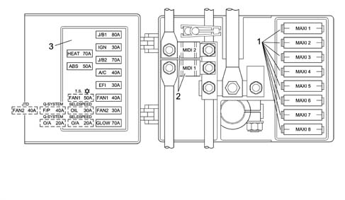
1, MAXIFUSE 2, MIDI fuses 3, Adhesive plate identifying fuses
Applies to: all engines; all production periods
INTEGRATED SERVICES ELECTRONIC CONTROL UNIT
Presentation
A single, integrated electronic control unit located beneath the facia trim on the passenger side contains a series of functions and controls relating to electrical devices:
- door lock/release
- fog lamp control
- front electric window operation
- timed passenger compartment and boot lighting
- timed rear window and door mirror demist operation
Door lock/release
The control unit controls the simultaneous operation of the lock motors on all four doors upon a control:
- from the key;
- from the front door switches (knobs);
- issued via the remote control.
The control unit monitors lock status by means of signals received from switches located on the four locks (these signals are also used to time the lighting).
A lock command is issued only when all doors are properly closed and the front locks are released.
Conversely, a release command is issued only when the front catches are locked.
The control unit also carries out a series of safety checks:
- switch position is checked at the end of each operation. If this position does not agree with the action carried out (e.g. if a door is open), a repulsion command is issued, i.e. the opposite manoeuvre is carried out to realign all the locks.
- If the control unit detects several complete, consecutive lock/release manoeuvres - at least 8 within 20 seconds - the system cuts in to limit the manoeuvres: the system is inhibited in release position for 30 seconds.
- If battery voltage drops below 9 V during a lock/release operation, the system suspends the operation. If battery voltage is lower than 9 V at the outset, no command is issued.
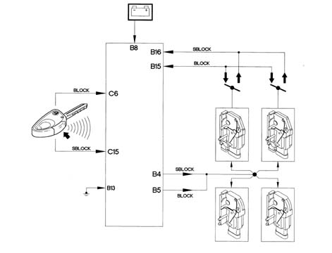
Fog lamp control
The control unit controls front fog lamp activation, which can only take place with:
- the ignition in the ON position
- side lights on.
When the control unit records two incoming signals, it enables front fog lamp activation by sending a control signal to the fog lamp relay.
If the side lights are switched off, the fog lamps are switched off even if the button is pressed. When the side lights are turned on again, the fog lamps come back on.
If the ignition is turned off and then turned back on again, the fog lamps do not come on, even if the side lights are on, and must be turned back on by pressing the button.
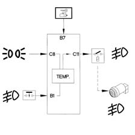
Fog lamp control
The control unit controls fog lamp activation, which can only take place with:
- the ignition in the ON position
- side lights on.
When the control unit records two incoming signals, it enables front fog lamp activation by sending a control signal to the fog lamp relay.
If the side lights are switched off, the fog lamps are switched off even if the button is pressed. When the side lights are turned on again, the fog lamps come back on.
If the ignition is turned off and then turned back on again, the fog lamps do not come on, even if the side lights are on, and must be turned back on by pressing the button.
Operation of front windows
The control unit operates the front windows automatically, in accordance with the following system which depends on how the button is pressed:
- for the driver's window:
- the operation is manual (the glass goes up/down only when the button is pressed) when the button is held down for 60 to 300 milliseconds;
- the operation is instead automatic (the glass continues to go up/down to the end of travel, even if the button is released) when the button is held down for over 300 milliseconds;
- if the button is pressed again during movement of the glass, the glass is stopped instantly
- if the button is pressed for less than 60 milliseconds, it is ignored (it is considered to have been knocked accidentally)
- for the passenger's window:
- closing is only manual
- opening is the same as for the driver's window (automatic).
Both windows can only be operated when the ignition is on.
The control unit also carries out a series of safety checks.
The stopping of the electric windows (switching off the electric supply to the motor) is determined when the glass reaches the end of travel at top or bottom, or if an obstacle blocks the glass. This is regulated by checking the motor current.
If there are faults on the electrical circuits, the control unit switches the system off temporarily, for example if:
- the motor control signals are interrupted or if the current uptake is below the usual values.
- there is a fault in the control buttons (short circuit, or buttons jammed in the pressed position).
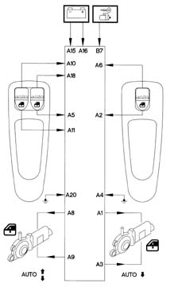
Timed passenger compartment courtesy light
When any of the four doors is opened, all front and rear courtesy lights are operated for a timed period, in accordance with the following logic:
- timed period of 7 seconds when the locks are unlocked using the key or the remote control;
- a timed interval of 7 seconds when a previously opened door is closed again; timing is suspended when the ignition is turned on; this allows the driver to enter the car and insert the key in the ignition
- timed interval of 3 minutes if one of the doors is left open: this function prevents the battery going flat if the car is left with a door open
When one of the other doors is opened, the current timer count is reset to zero.
Timed boot lighting
When the boot is opened, a light is turned on for a timed interval of 20 minutes: this function ensures that the battery does not go flat if the car is left with the boot open
Timer operation is suspended when the boot is closed
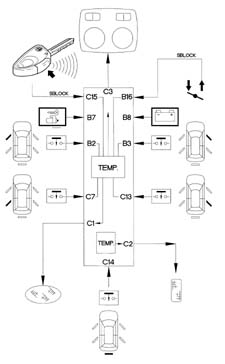
Timed demister operation (rear window and door mirrors)
The rear window heater element, door mirror demister coils and the windscreen heater element absorb a considerable amount of energy. They must therefore be turned off once they have been working for a certain period of time.
The control unit supplies the heated rear window and door mirrors under the control of a timer. The procedure is as follows.
The system is turned on with:
- the ignition in the ON position
- activation signal from the relevant button, located on the climate control system control panel (or from the air conditioner max defrosting function).
The resistances remain supplied for 20 minutes, then the power supply is cut off.
The power supply is also cut off under the following conditions:
- with the ignition in the OFF position
- deactivation signal from the relevant button (or the max. defrosting function);
- After 10 minutes of operation, if battery voltage drops below 11.6 V (the supply is restored if temperature rises to more than 13 V)
The button control always takes priority over the max. defrosting function. For example, if the rear window is activated automatically by the max. defrost function and the button is pressed, the rear window is deactivated.
The LED in the button stays on whilst the heated rear windscreen is activated.
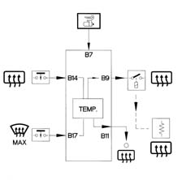
Control unit pin-out
Refer to the illustration
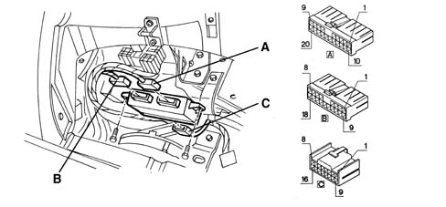
20-way connector:
1 Supply to passenger side window motor - up
2 Passenger side window motor control - down
3 Supply to passenger side window motor - down
4 Passenger side window earth
5 Passenger side window control from driver's side - down
6 Passenger side window motor control - up
7 N.C.
8 Driver's side window motor supply - up
9 Driver's side window motor supply - down
10 Driver's side window control - up
11 Driver's side window control - down
12 N.C.
13 N.C.
14 N.C.
15 +30 power source
16 +30 power source
17 N.C.
18 Passenger side window control from driver's side - up
19 N.C.
20 Driver's side window earth
Connector B, 18-way
1 Fog lamp switch
2 Front door switch driver's side for interior lights
3 Front door switch passenger side for interior lights
4 Door lock power source (release)
5 Door lock power source (lock)
6 N.C.
7 +15 power source
8 +30 power source
9 Heated rear window relay power source
10 N.C.
11 Output for heated rear window indicator
12 N.C.
13 Earth for electronic system and door lock
14 Heated rear window control
15 Control (lock) from front lock from key or switches
16 Control (release) from front lock from key or switches
17 Heated rear window control from climate control system (max. defrosting)
18 N.C.
Connector C, 16-way
1 Rear courtesy light timer power supply
2 Boot light timer power supply
3 Front courtesy light timer power supply
4 N.C.
5 N.C.
6 Control (lock) from remote control
7 Rear door switch driver's side for interior lights
8 Side lights on signal
9 N.C.
10 N.C.
11 fog lamp relay control
12 N.C.
13 Rear door switch passenger side for interior lights
14 boot switch for interior lights
15 Control (release) from remote control
16 N.C.
Applies to: all engines; production: da 03/02 a 09/03, da 10/03
CONSTRUCTION FEATURES
The electrical system has been designed with the safety of the vehicle uppermost, to prevent the risk of fire and the other consequences of electrical malfunctions and to reduce defective connections thanks to the adoption of the latest generation connectors.
The main solutions adopted are:
- Supplies protected by maxi fuses to interrupt the electrical system, in the case of a short circuit, just downstream of the battery.
- The only cables without maxi fuses (starter motor and alternator) are protected and positioned in a safe place;
- The layout of the entire system is designed to minimize the risk of damage in the case of a failure or accident;
- There are special cables in the engine compartment which are resistant to high temperatures and also protected with sheaths or pipes.
- The connections are fitted with anti-slip devices on the terminals (secondary lock).
JUNCTION UNIT
This is located on the left side of the facia and is protected by a removable flap.
Front view
Refer to the illustration.
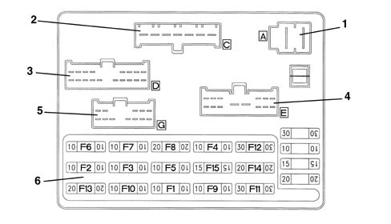
1- connector A (front wiring) 2 - connector C (front wiring) 3 - connector D (front wiring) 4 - connector E (dashboard wiring) 5 - connector G (dashboard wiring) 6 - Fuses
Rear view
Refer to the illustration.
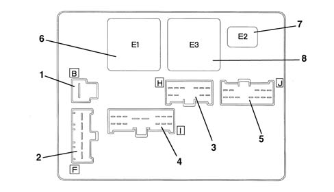
1 - connector B (dashboard wiring) 2 - connector F (dashboard wiring) 3 - connector H (dashboard wiring) 4 - connector I (dashboard wiring) 5 - connector J (dashboard wiring) 6 - relay E1 (loads excluded on starting) 7 - relay E2 (horns) 8 - relay E3 (heated rear window)
Fuses
The fuses are located on the front of the junction unit and are arranged as shown in the figure.
The circuits protected by the individual fuses are as follows:
Fuse, protected circuit
F1 - remote control receiver; alarm; reversing lights; interior lights; Cruise Control, radio
F2 - side lights, no. plate light; stop and rear fog light - left side
F3- side lights, no. plate light; stop and rear fog light - right side
F4 - right dipped beam headlamp; right headlamp adjuster
F5 - left dipped beam headlamp; left headlamp adjuster; headlamp adjuster and rear fog lamp enablement
F6 - right main beam headlamp
F7 - left main beam headlamp; main beam warning light
F8 - central door locking; boot light; timer-controlled courtesy lights;
F9 - direction indicators / hazard lights
F10 - instruments; interior illumination; clock; car radio; alarm; remote control receiver; air conditioning
F11 - rear window and rearview mirror demister
F12 - front electric windows
F13 - horns
F14 - windscreen wash/wipe; headlamp washers
F15 - cigarette lighter; air conditioning compressor
Numerous shunt fuses are located beneath the facia immediately above the junction unit (some of these fuses form part of the front wiring, some form part of the facia wiring)
Applies to: engines: 1.6 TS , 1.8 TS, 2.0 JTS, 2.5 V6, 3.2 V6, 2.0 JTS; production: da 03/02 a 09/03, da 10/03
A. front wiring
F1 - Fog lamp fuse
F2 - Injection services, air conditioning compressor supply fuse
F3 - Injection control unit supply fuse
F4 - Ignition-operated services supply fuse (15/54)
F5 - Injection memory, CODE, fan motor fuse
F6 - ABS fuse Cruise Control
Applies to: engines: 1.9 JTD 8v , 2.4 JTD 10v; production: da 03/02 a 09/03, da 10/03
F1 - Fog lamp fuse
F2 - Diesel preheating, air conditioning compressor supply fuse
F3 - Injection control unit supply fuse
F4 - Ignition-operated services supply fuse (15/54)
F5 - Injection memory, CODE, fan motor fuse
F6 - ABS fuse Cruise Control
Applies to: all engines; production: da 03/02 a 09/03, da 10/03
B. facia wiring
F1 - Fuse supply controlled by ignition (INT)
F2 - Rear window fuse
F3 - Rear window fuse
F4 - Fuse supply controlled by ignition (INT)
F5 - Air Bag fuse
F6 - Fuse supply controlled by ignition (INT/A)
C. facia wiring
F3 - Rear current socket fuse (SW only)
F4 - Bose HI-FI system fuses
F5 - Fuse for sun roof, heated seats, electric seat adjustment
F6 - Boot release fuse
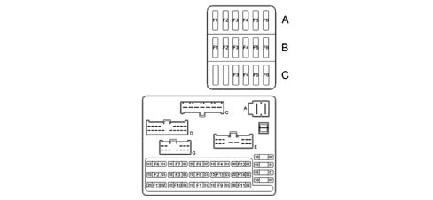
Applies to: all engines; all production periods
Link battery
The main supply lines are protected by maxifuses, grouped together in a box directly on the positive battery terminal and connected directly to it.
The fuse box contains up to eight maxifuses, named according to the circuits protected, located as illustrated in the diagram:
- J/B1: supply for services through the junction unit fuses
- IGN : ignition switch supply
- J/B2 : supply for services through the junction unit fuses
- A/C : air conditioning system supply.
- EFI : supply for fuses and relays for engine management
- FAN 1 : engine cooling fans supply
- FAN 2 : engine cooling fans supply or F/P: automatic transmission supply (for cars with Q-System gearbox) or OIL: Selespeed system pump supply.
- GLOW : glow plug and diesel preheating (for turbodiesel cars) or O/A: automatic transmission supply (for cars with Selespeed)
The fuse box also contains two 'MIDI' fuses, named according to the circuits protected, located as illustrated in the diagram:
- ABS: ABS supply;
- HEAT: supply to additional heater (for turbodiesel cars).
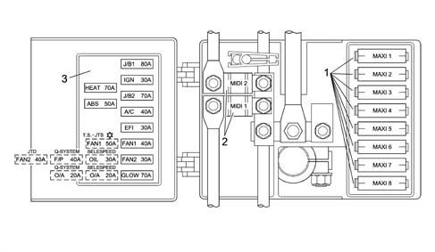
1 - 'MAXIFUSE' 2 - MIDI fuses 3 - Adhesive plate identifying fuses
Applies to: engines: 1.6 TS , 1.8 TS, 2.0 JTS, 2.5 V6, 3.2 V6, 2.0 JTS; all production periods
The main supply lines are protected by maxifuses, grouped together in a box directly on the positive battery terminal and connected directly to it.
The fuse box contains up to eight maxifuses, named according to the circuits protected, located as illustrated in the diagram:
- J/B1 : supply for services through the junction unit fuses
- J/B2: supply for services through the junction unit fuses
- A/C: air conditioning system supply.
- EFI: supply for fuses and relays for engine management
- FAN 1: engine cooling fans supply
- FAN 2: engine cooling fans supply or F/P: automatic transmission supply (for cars with Q-System gearbox) or OIL: Selespeed system pump supply.
- O/A: automatic transmission supply (for Selespeed vehicles)
The fuse box also contains two 'MIDI' fuses, named according to the circuits protected, located as illustrated in the diagram:
- ABS: ABS supply;
- IGN: ignition switch supply
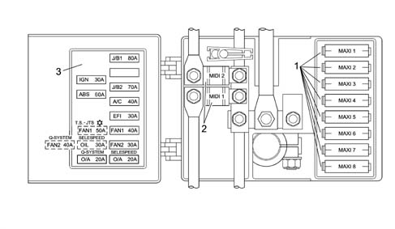
1 - 'MAXIFUSE' 2 - MIDI fuses 3 - Adhesive plate identifying fuses
Applies to: engines: 1.9 JTD 8v , 1.9 JTD 16v, 2.4 JTD 10v, 2.4 JTD 20v; all production periods
The main supply lines are protected by maxifuses, grouped together in a box directly on the positive battery terminal and connected directly to it.
The fuse box contains up to eight maxifuses, named according to the circuits protected, located as illustrated in the diagram:
- HEAT: additional heater supply;
- A/C: air conditioning system supply;
- J/B1 : supply for services through the junction unit fuses;
- J/B2: supply for services through the junction unit fuses;
- EFI: supply for fuses and relays for engine management
- FAN 1: engine cooling fans supply
- FAN 2: engine cooling fans supply
- GLOW: diesel heater plugs supply
The fuse box also contains two 'MIDI' fuses, named according to the circuits protected, located as illustrated in the diagram:
- ABS: ABS supply;
- IGN: ignition switch supply
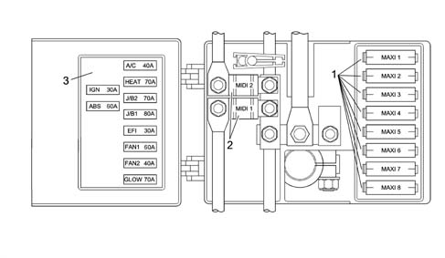
1 - 'MAXIFUSE' 2 - MIDI fuses 3 - Adhesive plate identifying fuses
Applies to: all engines; production: da 03/02 a 09/03, da 10/03
INTEGRATED SERVICES ELECTRONIC CONTROL UNIT
Presentation
A single, integrated electronic control unit located beneath the facia trim on the passenger side contains a series of functions and controls relating to electrical devices:
- door lock/release;
- fog lamp control
- front electric window operation
- timed passenger compartment and boot lighting
- timed demister operation (rear window and door mirrors)
- door release if the inertia switch is operated.
Door locking/release
The control unit controls the simultaneous operation of the lock motors on all four doors upon a control:
- from the key;
- from the front door switches (knobs);
- via the remote control.
The control unit monitors lock status by means of signals received from switches located on the four locks (these signals are also used to time the lighting).
A lock command is issued only when all doors are properly closed and the front locks are released.
Conversely, a release command is issued only when the front catches are locked.
The control unit also carries out a series of safety checks:
- switch position is checked at the end of each operation. If this position does not agree with the action carried out (e.g. if a door is open), a repulsion command is issued, i.e. the opposite manoeuvre is carried out to realign all the locks.
- if the control unit detects several complete, consecutive lock/release manoeuvres - at least 8 within 20 seconds - the system cuts in to limit the manoeuvres: the system is inhibited in release position for 30 seconds.
- if battery voltage drops below 9 V during a lock/release operation, the system suspends the operation. If battery voltage is lower than 9 V at the outset, no command is issued.
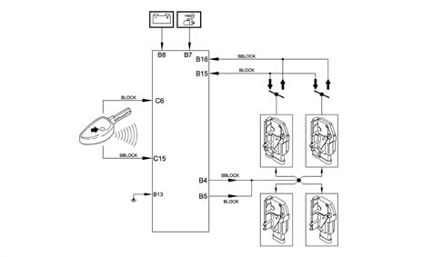
Fog lights check
The control unit controls fog lamp activation, which can only take place with:
- ignition turned on
- side lights on
When the control unit records two incoming signals, it enables front fog lamp activation by sending a control signal to the fog lamp relay.
If the side lights are switched off, the fog lamps are switched off even if the button is pressed. When the side lights are switched on again, the fog lights come on again.
If the ignition is turned off and then turned back on again, the fog lamps do not come on, even if the side lights are on, and must be turned back on by pressing the button.
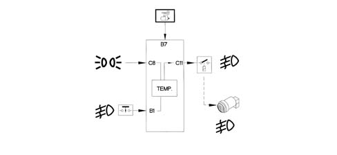
Operating front windows
The control unit operates the front windows automatically, in accordance with the following system which depends on how the button is pressed:
for the driver's window:
- the operation is manual (the glass goes up/down only when the button is pressed) when the button is held down for 60 to 300 milliseconds;
- the operation is instead automatic (the glass continues to go up/down to the end of travel, even if the button is released) when the button is held down for over 300 milliseconds;
- if the button is pressed again during movement of the glass, the glass is stopped instantly;
- if the button is pressed for less than 60 milliseconds, it is ignored (it is considered to have been knocked accidentally).
for the passenger's window:
- closing is only manual
- opening is the same as for the driver's window (automatic).
Both windows can only be operated when the ignition is ON.
The control unit also carries out a series of safety checks.
The stopping of the electric windows (switching off the electric supply to the motor) is determined when the glass reaches the end of travel at top or bottom, or if an obstacle blocks the glass. This is regulated by checking the motor current.
If there are faults on the electrical circuits, the control unit switches the system off temporarily, for example if:
- the motor control signals are interrupted or if the current uptake is below the usual values.
- there is a fault in the control buttons (short circuit, or buttons jammed in the pressed position).
With the ignition OFF and for a maximum period of 2 minutes or until one of the front doors is opened, the control unit provides a supply to the control buttons. This enables the manual operation of the front windows from the moment the igntion is switched OFF until one of the front doors is opened.
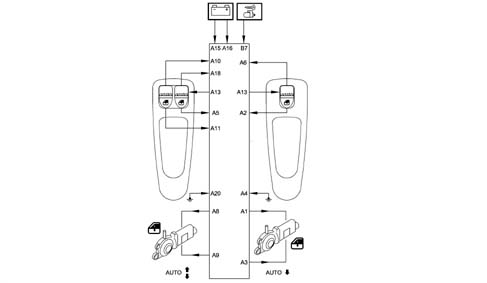
Timed courtesy lights
The control unit ensures the timed operation of the front, rear and luggage compartment courtesy lights.
There is also a dimmer function for the courtesy lights so that they come on and go out gradually.
When any of the four doors is opened, all front and rear courtesy lights are operated for a timed period, in accordance with the following logic:
- timed period of 6 seconds when the locks are unlocked using the key or the remote control;
- a timed interval of 6 seconds when a previously opened door is closed again; timing is suspended when the key is turned on (this function allows the driver to enter the car and insert the key in the ignition)
- timed interval of 3 minutes if one of the doors is left open (this function prevents the battery going flat if the car is left with a door open)
When one of the other doors is opened, the current timer count is reset to zero.
With the ignition OFF or when any of the doors or the boot is opened, a timer is set for 15 minutes at the end of which the loads are deactivated. The timer starts (15 minute period) each time one of the doors or the boot is opened again.
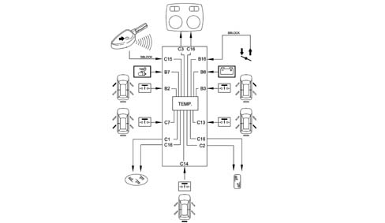
A door open signal is also sent to the on-board instruments to turn on the warning light. 5560 INSTRUMENT PANEL
Timed demister operation (rear window and door mirrors)
The rear window heater element, door mirror demister coils and the windscreen heater element absorb a considerable amount of energy. They must therefore be turned off once they have been working for a certain period of time.
The control unit supplies the heated rear window and door mirrors under the control of a timer. The procedure is as follows:
The system is turned on with:
- ignition turned on
- activation signal from the relevant button, located on the climate control system control panel (or from the air conditioner max defrosting function).
The resistances remain supplied for 20 minutes, then the power supply is cut off.
The power supply is also cut off under the following conditions:
- with ignition in OFF position.
- disengagement signal from the button (or from the 'rapid demisting' function);
- after the initial 10 minutes of operation, if the battery voltage goes below 11.6 V (if the voltage goes back up above 13 V, then the supply is restored).
The button control always takes priority over the max. defrosting function. For example, if the rear window is activated automatically by the max. defrost function and the button is pressed, the rear window is deactivated.
The LED in the button stays on whilst the heated rear windscreen is activated.
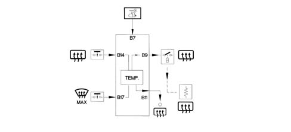
Inertia safety switch
If the circuit receives an impulse to earth coming from the inertia switch lasting more than 5 ms, it immediately releases the doors and inhibits locking for 30 seconds. During the release the courtesy lights come on for 6 seconds.
The inhibition lasts as long as the inertia switch is closed. As soon as the inertia switch is reset, the inhibition is deactivated after 30 seconds.
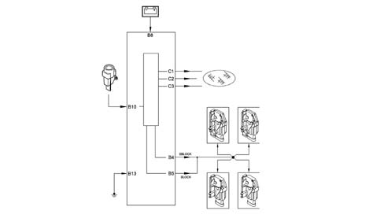
Control unit pin-out
Refer to the illustration.
Connector A, 20-way
1 | Supply to passenger side window motor - up |
|---|---|
2 | Passenger side window motor control - down |
3 | Supply to passenger side window motor - down |
4 | Passenger window earth |
5 | Passenger side window control from driver's side - down |
6 | Passenger side window motor control - up |
7 | N.C. |
8 | Driver's side window motor supply - up |
9 | Driver's side window motor supply - down |
10 | Driver's side window control - up |
11 | Driver's side window control - down |
12 | N.C. |
13 | Electric window controls supply |
14 | N.C. |
15 | +30 supply |
16 | +30 supply |
17 | N.C. |
18 | Passenger side window control from driver's side - up |
19 | N.C. |
20 | Driver's window earth |
Connector B, 18-way
1 | Fog lamp switch |
|---|---|
2 | Switch on driver's side for interior lights |
3 | Switch on passenger side for interior lights |
4 | Central locking motors supply (release) |
5 | Central locking motors supply (locking) |
6 | N.C. |
7 | Supply + 15 |
8 | +30 supply |
9 | Heated rear windscreen relay supply |
10 | Input from inertia switch |
11 | Output for heated rear windscreen warning light |
12 | N.C. |
13 | Earth for electronics and central locking |
14 | Heated rear windscreen operation |
15 | Command (lock) from front locks from key or switches |
16 | Command (release) from front locks from key or switches |
17 | Heated rear window control from climate control system (max. defrosting) |
18 | N.C. |
Connector C, 16-way
1 | Rear courtesy light timed supply |
|---|---|
2 | Boot light timed supply |
3 | Front courtesy light timed supply |
4 | Door open output signal |
5 | N.C. |
6 | Command (locking) from remote control |
7 | Switch on rear driver's side for interior lights |
8 | Side lights on signal |
9 | N.C. |
10 | N.C. |
11 | Fog lamp relay control |
12 | N.C. |
13 | Switch on rear passenger side for interior lights |
14 | Boot switch for interior lights |
15 | Command (release) from the remote control |
16 | Timed supply |